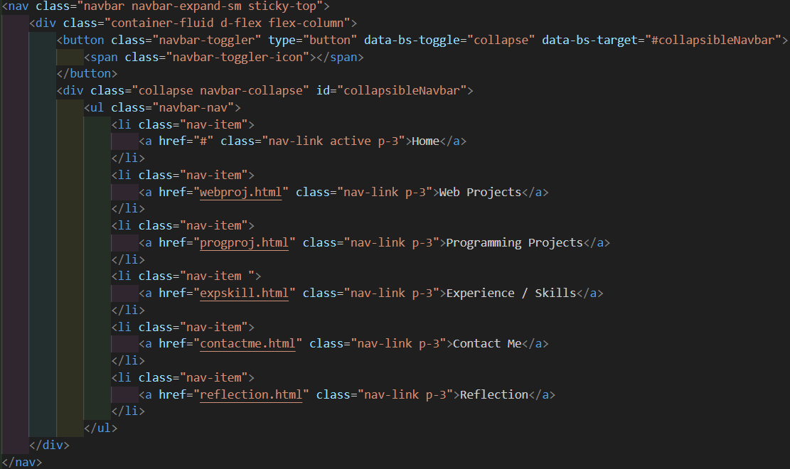

Reflection
A Reflection on This ePorfolio
Accessibility & Color. As we progress through the course, we continue to explore different strategies and methods of web design. Similar to previous assignments, I selected colors that can maximize contrast and enhance readability. The color purple was chosen as it is my favorite and I felt it would be the perfect representation for a portfolio about me. By using darker shades of purple as the background for white text, I achieved higher contrast. Lighter shades of purple are used to indicate the current tab the user is on and highlight links when the user hovers over them. A "Skip navigation" feature was implemented on each page, allowing users to tab directly to the main content for improved accessibility.
Bootstrap. For this ePortfolio, I chose to use the newly learned Bootstrap framework to design the website. Through research and practice from previous labs, I have developed the skills to effectively use Bootstrap to align content, such as text and images, and achieve the desired layout. With a focus on responsive web design, I utilized Bootstrap to ensure that the content adjusts seamlessly across various screen sizes. Reflecting on my first web project, I implemented a hamburger menu for smaller screens to improve content spacing and accessibility. Additionally, I included dropdown menus for navigating to different sections of the webpage, making access more user-friendly.
The Challenge. Because I had only recently learned Bootstrap, I recognize that my experience with this framework is still limited. As a result, there may be alternative design and coding choices that could improve the overall project. To achieve the desired design and layout required extensive research and learning in the limited time, which helped me grow as a web developer.
Some Thoughts. As mentioned in The Challenge, limited knowledge can influence the design of this website. However, I believe I have made significant improvements since the last project. From a design perspective, I have enhanced accessibility and improved responsiveness. While learning Bootstrap within a short time frame was challenging, I find it more enjoyable and efficient for web design. As I worked on this webpage, I appreciated exploring alternative methods for creating diverse layouts, which made the process both rewarding and educational.